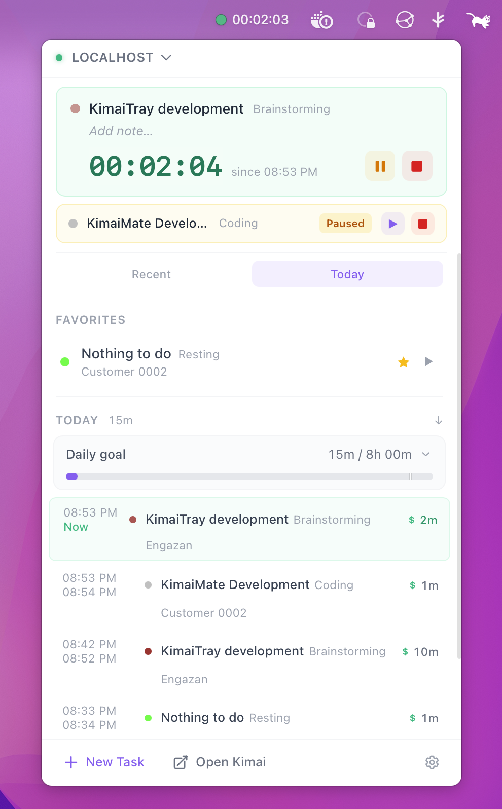
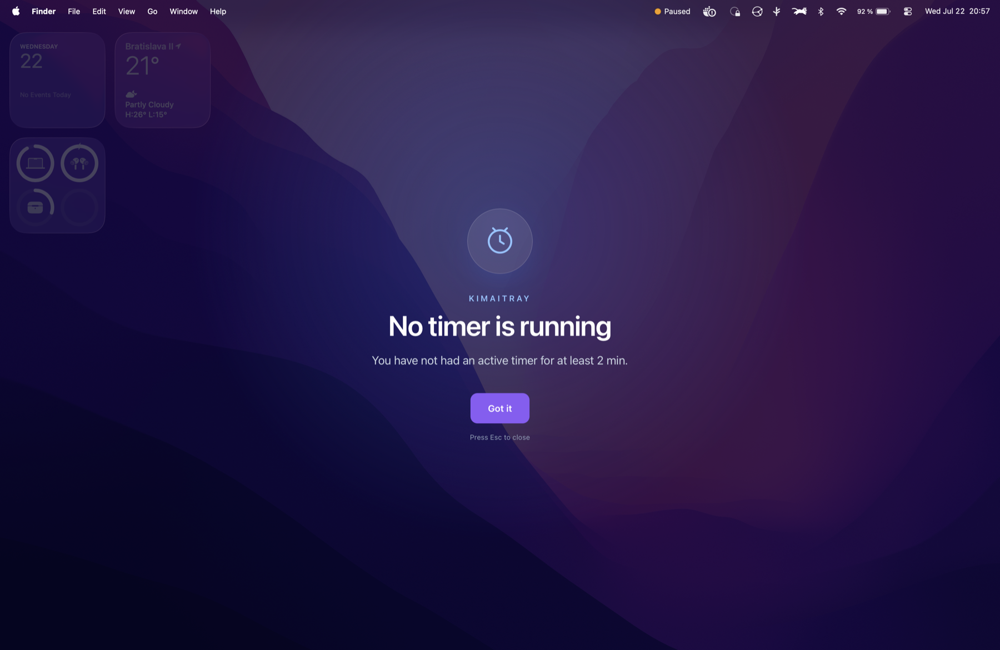

⏱
Timers at your fingertips
Start, stop, pause and switch from the tray. Run several timers at once when your Kimai allows it. Quick-start from favorites and recent tasks with a keystroke.
⌘1–9start favoriteSpacepause⌘Nnew task
KimaiTray lives in your menu bar or system tray. Start, pause, switch and stop Kimai timers without ever opening a browser tab.

Features
Start, stop, pause and switch from the tray. Run several timers at once when your Kimai allows it. Quick-start from favorites and recent tasks with a keystroke.
Walked away? Choose to stop at idle start, stop now or keep running. Idle stats included.
Per-connection goals with remaining time and an estimated finish time.
Network hiccup? Starts and resumes are queued and retried — no duplicate timers.
A two-level category & activity tree with icons and colors, synced from a URL.
Classic, Focus, Taskbar and Timeline layouts. Light, dark and transparent themes, five accents, UI scaling up to 160%, custom tray icon colors and a configurable macOS menu-bar label.
Credentials stay in your OS keychain. Requests go through a native, origin-validated HTTP broker.
Isolated accounts and servers, each with its own favorites, settings and integrations.
Start timers from anywhere with kimaitray://start — perfect for browser scripts.
Integrations
Connect GitLab, GitHub or Gitea per Kimai connection. Pick an issue when you start a timer, see spent and estimated time, and push recorded time back to GitLab and Gitea when you stop.
Reminders
Optional full-screen reminders for idle time and for when nothing is being tracked — hard to miss, easy to act on.

Download
The latest version · automatic updates built in
macOS 10.15 or newer · signed & notarized
Windows 10 / 11 · 64-bit
X11 & supported Wayland desktops · x86_64